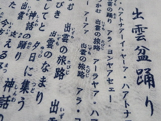
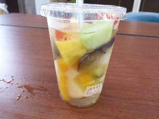

出雲神話まつりの花火大会でしたね。
2012/08/12
花火を見ようと外に出たんですが、斐伊川の上には煙が沢山あって綺麗に見えませんでした。
離れた場所から見たので、よけい見えにくかったかもしれません。
今日は風が少なく、花火の煙がいつまでも漂っててカラフルな稲光を見ているようでした。
面白くないのですぐ帰りました。残念です。
出雲市役所のホームページにはイベント情報ってページがあるんですが、神話まつりや花火大会予定は書かれていませんでした。
何故でしょうね。
あんまり人に知られたくないのかな？
出雲神話まつりの花火大会。
2011/08/21
神話まつりの花火大会を遠くから見ました。
今年は会場が大津町の神立河川敷公園でした。
近くで見たかったですが、行くのが面倒なので遠くから見ました。
10000発あったらしく、切れ間が少なくて良かったです。
次は海でやって欲しいかな。
出雲神話まつりに行ってみました。
2011/08/20
第六回出雲神話まつりを見に行きました。駅通りであった盆踊りです。

行ったら出雲盆踊り唄が印刷された布をもらいました。「これを使って踊ってください」って言われたんですけど、踊れませんでした。
新しく盆踊りが出来てたんですね。とっても長い歌詞なので、覚えるの大変そうです。
出雲市の名所が沢山のっている歌詞ですが、新しく合併する斐川町のことは唄われていないようです。
来年は更に長くなるかもしれないですね。

これはおまつりで200円で販売していたフルーツポンチです。
果物がいっぱい入っていて美味しかったです。
盆踊りを踊っている人や、神話まつりの関係者の方たちの人数は多かったですが、観客の人数は少なかったです。あと出店もすくなかったです。
天気は曇りで気温も涼しく、ちょっと寂しい夏祭りだなって思いました。
来年は活気がある夏祭りになるといいですね。
第4回出雲神話まつり 神話夢おどり・花火大会。
2009/08/09
花火が始まってから見に行ったので、踊りは見てません。
武志町の斐伊川河川敷が会場になってから初めて行ったんですが、広いですね。打ち上げ場所が見えないのと、花火の位置が少し離れていたので、ちょっと臨場感が少なかったです。（安全のためでしょうね）
会場が斐伊川河川敷ですが、水上の花火ではないので水に反射して、綺麗なんて事はないです。でも6000発の花火が1時間くらいの間に上がったので、綺麗でした。
花火の写真を撮ったんですが、光の流れが面白く映るもんなんですね。
第3回出雲神話まつり。
2008/08/10
昼間に見に行ったんですが、簡単にぐるっと1周しました。「もう他に何かないの？」って気分になりました。もうちょっと何かイベントとか、展示ブースがあれば楽しく過ごせるのになーって思いました。
前回は露天商の屋台が沢山出ていたり、お役所のブースがあったり、ステージで色々イベントをしていてにぎやかでした。でも今回はそうゆうのが少なくなってました。スケールダウンですね。でも地元の高校のお店が出てて、色んな事していたのは面白くて良かったです。
今日は広島の世羅牛のコロッケと、飛田のラーメンを食べたんですが、両方とも美味しかったです。またどこかのイベントで見つけたら食べようって思いました。
第2回出雲神話祭り。
2007/08/11
参加はしないですけど、ちょっと見物に行きました。
日中に行ったのでとても暑かったです。街中のお祭りだと近くのお店に避難して涼むことが出来るんでしょうけど、ここは浜山公園なのでなかなかそうはいきません。カミアリーナに行けば涼しいんですが、綱引きに参加するわけじゃないので近寄りにくかったです。
イベントに行くとよく国土交通省のブースを見かけるんですが、今回ここではクイズに答えるとジュースやタオル、花火とかが貰えてよかったです。
他のイベントでも、国土交通省のブースを見かけたらいいもの貰えたりするので行ってみて下さい。お勧めです。
今回一番目立ったのは、ミニ動物園の陸亀でした。大きい亀が歩くところなんてなかなか見れないですよ。しかも意外と早く歩くんですね。
小さい子供は亀に乗って歩かせてもらってました。そんな事できるんですね。ちょっとびっくりしました。